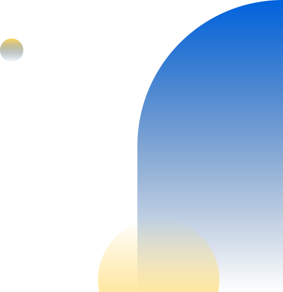
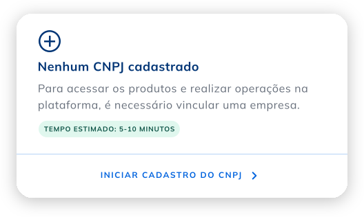

Estratégia de UX · UX Writing


Problema: a falta de orientação entre etapas gerava tentativas repetidas, cancelamentos e retrabalho antes da contratação.
Minha atuação: cruzei Analytics com 15 gravações de sessão, mapeei o serviço e traduzi o diagnóstico em prioridades de redesign.
Decisão: priorizei navegação, progresso e validações por etapa antes de ajustes visuais, preservando as exigências regulatórias.
Resultado: a apresentação reporta 32% menos abandono, 27% menos tempo para concluir o CNPJ e 35% menos erros finais.
Hoje faria diferente: definiria a medição de avanço por etapa desde o início, distinguindo tempo de uso de progresso real.
A apresentação do redesenho reporta os seguintes resultados:
Resultado reportado na apresentação do redesenho.
Resultado reportado na apresentação do redesenho.
Resultado reportado na apresentação do redesenho.
Redesenho documentado, com resultados reportados na apresentação.
Hoje faria diferente: definiria a medição de avanço por etapa desde o início, distinguindo tempo de uso de progresso real.